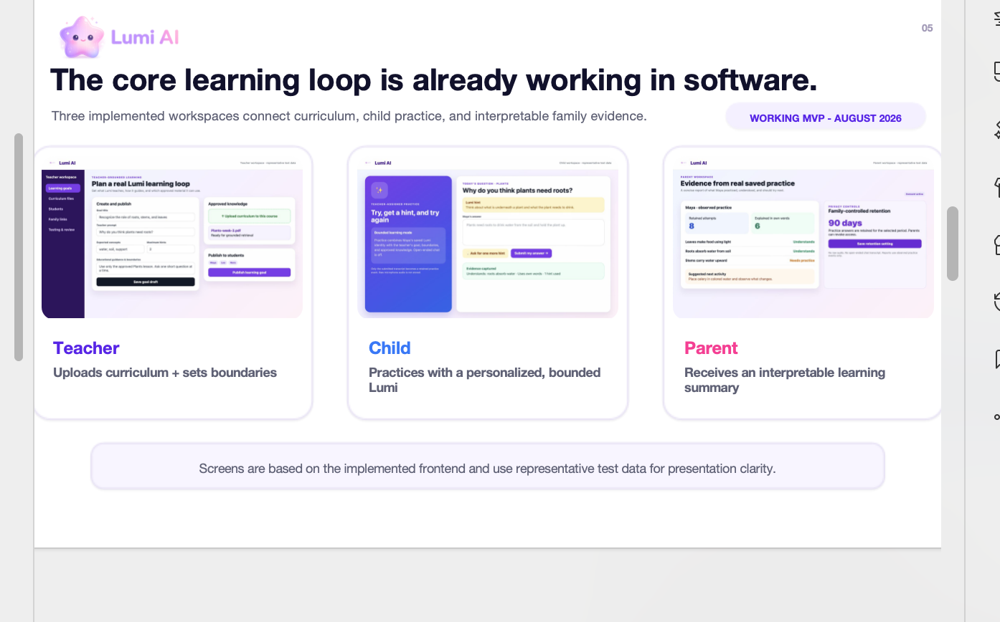

01 · AI SYSTEMS2026—Present
Lumi AI — grounded conversational learning
Teacher-grounded conversational learning with retrieval boundaries, abstention, evaluation, and evidence-linked feedback. The public interactive demo lets reviewers explore Teacher, Student, Evaluation, Parent, and Architecture workflows using transparent sample data.
RAG GroundingEvaluationPrivacy-aware Architecture
- Connected file ingestion, vector retrieval, streamed chat, configurable tutor behavior, and evaluation workflows.
- Designed retrieval-aware response boundaries so unsupported questions can trigger explicit abstention rather than confident invention.
